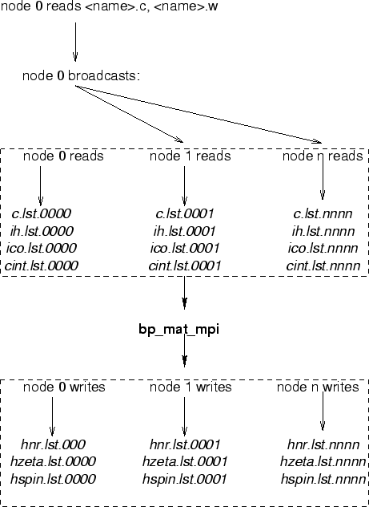

DO jb = myid + 1, ncfg, nprocs
if(mod(jb,1000).eq.0) write(ISCW,'(A,I5)') ' jb = ',jb
if(jb == ncfg) write(ISCW,'(A,I5)') ' jb = ',jb
CALL SHELLSJB(JB)
call BreitGG(NEW,NZERO,IFIRST,idg,skip,nze)
write(11) nih, (jan(i),i=1,nih);
write(12) nih, (ico(i),i=1,nih);
mycol = mycol + 1
jptr(mycol) = nij
end do
Each node records the angular data in a separate file, and this is an important factor for accomplishing high efficiency of the parallel program. add data Note, that the each file has 4 digits for the processor ID, while nonh uses three digits.
|  |